java网站架构--Edit by lwsh
Nginx应用
nginx介绍
Nginx是一款高性能的http 服务器/反向代理服务器及电子邮件（IMAP/POP3）代理服务器。官方测试nginx能够支支撑5万并发链接，并且cpu、内存等资源消耗却非常低，运行非常稳定。
nginx应用场景
1、http服务器。Nginx是http服务可以独立提供http服务。可以做网页静态服务器。
2、虚拟主机。可以实现在一台服务器虚拟出多个网站。例如个人网站使用的虚拟主机。
3、反向代理，负载均衡。当网站的访问量达到一定程度后，单台服务器不能满足用户的请求时，需要用多台服务器集群可以使用nginx做反向代理。并且多台服务器可以平均分担负载，不会因为某台服务器负载高宕机而某台服务器闲置的情况。
nginx安装
1、nginx安装编译环境
l gcc
编译依赖gcc环境，Centos：yum install gcc，ubunt：apt-get install gcc
l pcre
pcre(Perl Compatible Regular Expressions)是Perl的一个库，包括perl兼容的正则表达式库。nginx的http模块使用pcre解析正则表达式。Centos：yum install -y pcre pcre-devel
ubuntu：apt-get install libpcre3 libpcre3-dev
l zlib
zlib提供了压缩和解压的多种方式，nginx使用zlib对http包的内容进行gzip，需要zlib库，Centos：yum install -y zlib zlib-devel，ubuntu：apt-get install zlib1g-dev。
l openssl
OpenSSL是一个强大的安全套接字密码库，包括密码算法、常用密钥和证书封装管理功能以及SSL协议，Centos：yum install -y openssl openssl-devel，ubuntu：apt-get -insatll openssl libssl-dev。
2、上传nginx压缩包至服务器。
3、解压压缩包tar -zxvf nginx-***.tar.gz，进入nginx目录，cd nginx-***。
4、创建目录
mkdir -p /var/temp/nginx
5、设置参数如下：
./configure \
--prefix=/usr/local/nginx \
--pid-path=/var/run/nginx/nginx.pid \
--lock-path=/var/lock/nginx.lock \
--error-log-path=/var/log/nginx/error.log \
--http-log-path=/var/log/nginx/access.log \
--with-http_gzip_static_module \
--http-client-body-temp-path=/var/temp/nginx/client \
--http-proxy-temp-path=/var/temp/nginx/proxy \
--http-fastcgi-temp-path=/var/temp/nginx/fastcgi \
--http-uwsgi-temp-path=/var/temp/nginx/uwsgi \
--http-scgi-temp-path=/var/temp/nginx/scgi
6、编译：make
7、安装：make install
nginx使用
1、启动nginx
cd /usr/local/nginx/sbin
./nginx
注意：执行./nginx启动nginx，这里可以-c指定加载的nginx配置文件，如下：
./nginx -c /usr/local/nginx/conf/nginx.conf
如果不指定-c，nginx在启动时默认加载conf/nginx.conf文件，此文件的地址也可以在编译安装nginx时指定./configure的参数（--conf-path= 指向配置文件（nginx.conf））
2、查询nginx进程
root@lwsh:~# ps -ef | grep nginx root 12804 1 0 10:13 ? 00:00:00 nginx: master process ./nginx nobody 12805 12804 0 10:13 ? 00:00:00 nginx: worker process root 13461 13379 0 10:42 pts/3 00:00:00 grep --color=auto nginx |
12804是nginx主进程的进程id，12805是nginx工作进程的进程id。
3、访问nginx，在浏览器输入ip地址，出现Welcome to nginx!页面则nginx安装成功。
4、停止nginx
i. 快速停止
./nginx -s stop
相当于先查询出nginx的进程id，再使用kill命令强制杀掉进程。
ii. 完整停止（建议使用）
./nginx -s quit
待nginx进程处理结束后退出停止。
5、重启nginx
重启命令，修改nginx.conf配置文件，重新加载配置文件。
./nginx -s reload
配置虚拟主机
虚拟主机
虚拟主机可以将一台主机分成多个虚拟主机，每个虚拟主机可以独立对外提供www服务，这样可实现一台主机对外提供多个web服务，每个虚拟主机相互独立，互不影响。nginx实现虚拟主机有三种方式:
1、ip虚拟主机。
2、端口虚拟主机。
3、域名虚拟主机。
nginx配置文件结构
......
events {
.......
}
http{
.......
server{
.......
}
server{
.......
}
}
每个server就是一个虚拟主机。
基于IP的虚拟主机
同一个服务器配置多个ip地址。
方法一
使用标准网络配置工具（ifconfig和route命令）添加ip别名：
当前ip
root@lwsh:~# ifconfig ens33: flags=4163<UP,BROADCAST,RUNNING,MULTICAST> mtu 1500 inet 192.168.195.132 netmask 255.255.255.0 broadcast 192.168.195.255 inet6 fe80::f02e:4140:51d0:ba04 prefixlen 64 scopeid 0x20<link> ether 00:0c:29:ba:c7:3f txqueuelen 1000 (Ethernet) RX packets 10877 bytes 3056167 (3.0 MB) RX errors 0 dropped 0 overruns 0 frame 0 TX packets 7899 bytes 1070854 (1.0 MB) TX errors 0 dropped 0 overruns 0 carrier 0 collisions 0 device interrupt 19 base 0x2000 lo: flags=73<UP,LOOPBACK,RUNNING> mtu 65536 inet 127.0.0.1 netmask 255.0.0.0 inet6 ::1 prefixlen 128 scopeid 0x10<host> loop txqueuelen 1000 (Local Loopback) RX packets 453 bytes 33192 (33.1 KB) RX errors 0 dropped 0 overruns 0 frame 0 TX packets 453 bytes 33192 (33.1 KB) TX errors 0 dropped 0 overruns 0 carrier 0 collisions 0 |
在ens33网卡再绑定一个ip：192.168.195.22
/sbin/ifconfig ens33:1 192.168.195.22 broadcast 192.168.195.255 netmask 255.255.255.0 up
/sbin/route add -host 192.168.195.22 dev ens33:1
root@lwsh:~# ifconfig ens33: flags=4163<UP,BROADCAST,RUNNING,MULTICAST> mtu 1500 inet 192.168.195.132 netmask 255.255.255.0 broadcast 192.168.195.255 inet6 fe80::f02e:4140:51d0:ba04 prefixlen 64 scopeid 0x20<link> ether 00:0c:29:ba:c7:3f txqueuelen 1000 (Ethernet) RX packets 11426 bytes 3096722 (3.0 MB) RX errors 0 dropped 0 overruns 0 frame 0 TX packets 8272 bytes 1119349 (1.1 MB) TX errors 0 dropped 0 overruns 0 carrier 0 collisions 0 device interrupt 19 base 0x2000 ens33:1: flags=4163<UP,BROADCAST,RUNNING,MULTICAST> mtu 1500 inet 192.168.195.22 netmask 255.255.255.0 broadcast 192.168.195.255 ether 00:0c:29:ba:c7:3f txqueuelen 1000 (Ethernet) device interrupt 19 base 0x2000 |
方法二
修改网卡配置文件
新增网卡ens33:1
新增ip 192.168.195.22
修改配置文件
复制静态网页cp -r html html128，cp -r html html22，并修改index.html。
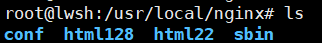
#配置虚拟主机 server { #虚拟主机监听的ip和端口 listen 80; server_name 192.168.195.132; #charset koi8-r; #access_log logs/host.access.log main; #所有的请求都以/开始，所有的请求都可以匹配此location location / { #使用root指令指定虚拟主机目录即网页存放目录 #比如访问http://ip/test.html将找到/usr/local/html132/test.html root html132; #指定欢迎页面，按从左到右顺序查找 index index.html index.htm; } } server { listen 80; server_name 192.168.195.22; #charset koi8-r; #access_log logs/host.access.log main; location / { root html22; index index.html index.htm; } } |
访问192.168.195.22
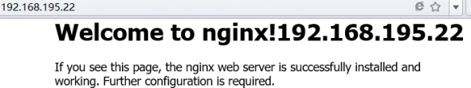
访问192.168.195.128
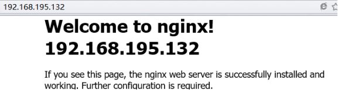
基于端口的虚拟主机
修改配置文件
复制静态网页cp -r html html81，cp -r html html82，并修改index.html。
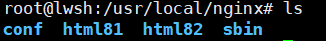
#配置虚拟主机 server { listen 81; server_name 192.168.195.132; #charset koi8-r; #access_log logs/host.access.log main; location / { root html81; index index.html index.htm; } } server { listen 82; server_name 192.168.195.132; #charset koi8-r; #access_log logs/host.access.log main; location / { root html82; index index.html index.htm; } } |
访问http://192.168.195.132:81
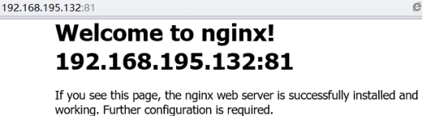
访问http://192.168.195.132:82
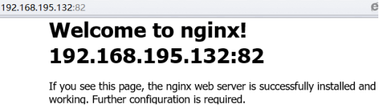
基于域名的虚拟主机
一个域名只能绑定一个ip地址，一个ip地址能绑定多个域名。两个域名指向同一台nignx服务器，访问不同的域名显示不同的内容。
修改host文件使www.lwsh.com和www.lwsh.cn对应192.168.195.132虚拟机。可以通过SwitchHosts工具修改。
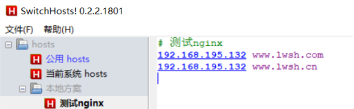
修改配置文件
复制静态网页cp -r html htmlcom，cp -r html htmlcn，并修改index.html。
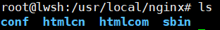
#配置虚拟主机 server { listen 80; server_name www.lwsh.com; #charset koi8-r; #access_log logs/host.access.log main; location / { root htmlcom; index index.html index.htm; } } server { listen 80; server_name www.lwsh.cn; #charset koi8-r; #access_log logs/host.access.log main; location / { root htmlcn; index index.html index.htm; } } |
访问www.lwsh.com
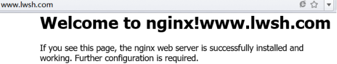
访问www.lwsh.cn
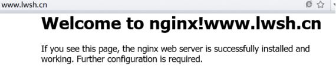
nginx反向代理
反向代理
通常的代理服务器，只用于代理内部网络对Internet的连接请求，客户机必须指定代理服务器，并将本来要直接发送到Web服务器的http请求发送到代理服务器，由代理服务器向Internet上的Web服务器发起请求，最终达到客户机，该过程即正向代理。
而反向代理（Reverse Proxy）是指以代理服务器来接收Internet上的连接请求，然后将请求转发给内部网络上的服务器，并将服务器上得到的结果返回给Internet上请求连接的客户端，此时代理服务器对外就表现为一个反向代理服务器。
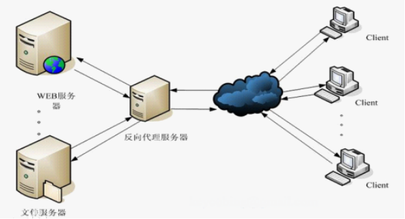
nginx+tomcat反向代理
两个tomcat服务通过nginx反向代理。
tomcat1服务器：192.168.195.132:8080
tomcat2服务器：192.168.195.132:8081
如下图：

配置tomcat
修改tomcat1的conf目录下的server.xml文件端口参数。
...... <Server port="8005" shutdown="SHUTDOWN"> ...... <Connector port="8080" protocol="HTTP/1.1" connectionTimeout="20000" redirectPort="8443" /> ...... <Connector port="8009" protocol="AJP/1.3" redirectPort="8443" /> |
修改tomcat1的conf目录下的server.xml文件端口参数。
...... <Server port="8006" shutdown="SHUTDOWN"> ...... <Connector port="8081" protocol="HTTP/1.1" connectionTimeout="20000" redirectPort="8443" /> ...... <Connector port="8010" protocol="AJP/1.3" redirectPort="8443" /> |
修改tomcat1、tomcat2的webapps/ROOT/index.jsp以作区分。启动tomcat：./bin/startup.sh
nginx反向代理配置
修改配置文件
#配置一个代理即tomcat1服务器 upstream tomcat_server1{ server 192.168.195.132:8080; } #配置一个代理即tomcat2服务器 upstream tomcat_server2{ server 192.168.195.132:8081; } server { listen 80; server_name www.lwsh.com; location / { #域名www.lwsh.com的请求全部转发到tomcat_server1即tomcat1服务上 proxy_pass http://tomcat_server1; index index.html index.htm; } error_page 500 502 503 504 /50x.html; location = /50x.html { root html; } } server { listen 80; server_name www.lwsh.cn; location / { #域名www.lwsh.cn的请求全部转发到tomcat_server2即tomcat2服务上 proxy_pass http://tomcat_server2; index index.html index.htm; } error_page 500 502 503 504 /50x.html; location = /50x.html { root html; } } |
分别访问www.lwsh.com、www.lwsh.cn测试反向代理。
访问www.lwsh.com，tomcat1下的index.jsp如下：
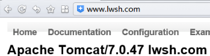
访问www.lwsh.cn，tomcat2下的index.jsp如下：
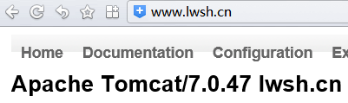
负载均衡
什么是负载均衡
负载均衡建立再现有的网络结构之上，提供了一种廉价有效透明的方法扩展网络设备和服务器的带宽、增加吞吐量、加强网络数据处理能力、提高网络的灵活性和可用性。
负载均衡即Load Balance，其意思就是分摊到多个操作单元进行执行，例如Web服务器、FTP服务器、企业关键应用服务器和关键任务服务器等，从而共同完成工作。
nginx实现负载均衡
nginx作为负载均衡服务器，用户请求最先到达nginx，再由nginx根据负载配置将请求转发至tomcat服务器。
nginx负载均衡服务器：192.168.195.132
tomcat1服务器：192.168.195.132:8080
tomcat2服务器：192.168.195.132:8081
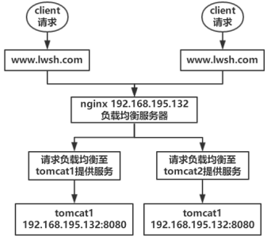
修改配置文件
upstream tomcat_server_pool{ server 192.168.195.132:8080 weight=2; server 192.168.195.132:8081 weight=1; } server { listen 80; server_name www.lwsh.com; location / { proxy_pass http://tomcat_server_pool; index index.html index.htm; } error_page 500 502 503 504 /50x.html; location = /50x.html { root html; } } |
节点说明： 在http节点里添加: #定义负载均衡设备的 Ip及设备状态 upstream myServer { server 127.0.0.1:9090 down; server 127.0.0.1:8080 weight=2; server 127.0.0.1:6060; server 127.0.0.1:7070 backup; } 在需要使用负载的Server节点添加： Proxy_pass http://tomcat_server_pool; upstream每个设备的状态 down 表示当前设备暂时不参与负载 weight 默认为1，weight越大，负载的权重就越大。当weight相等时即为轮询策略。 max_fails 允许请求失败的次数默认为1，当超过最大次数时，返回proxy_next_upstream模块定义的错误 fail_timeout max_fails次失败后，暂停的时间 backup 其它所有的非backup机器down或者忙的时候就请求backup机器。该机器压力最轻 |
访问www.lwsh.com。
每访问三次，有两次落在tomcat1服务器。
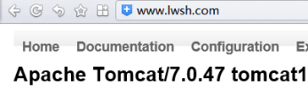
一次落在tomcat2服务器。
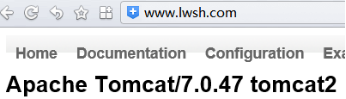
nginx负载均衡策略
1、轮询（默认）
每个请求按时间顺序逐一分配到不同的后端服务器，如果后端服务器down掉，能自动剔除。
upstream backserver {
server 192.168.0.14;
server 192.168.0.15;
}
2、指定权重
指定轮询几率，weight和访问比率成正比，用于后端服务器性能不均的情况。
upstream backserver {
server 192.168.0.14 weight=10;
server 192.168.0.15 weight=10;
}
3、IP绑定ip_hash
每个请求按访问ip的hash结果分配，这样每个访客固定访问一个后端服务器，可以解决session的问题。
upstream backserver {
ip_hash;
server 192.168.0.14:88;
server 192.168.0.15:80;
}
4、fair（第三方）
按后端服务器的响应时间来分配请求，响应时间短的优先分配。
upstream backserver {
server server1;
server server2;
fair;
}
5、url_hash（第三方）
按访问url的hash结果来分配请求，使每个url定向到同一个后端服务器，后端服务器为缓存时比较有效。
upstream backserver {
server squid1:3128;
server squid2:3128;
hash $request_uri;
hash_method crc32;
}
Keepalived应用
VRRP协议
VRRP协议简介
在现实网络环境中（如Internet），两台需要通信的主机（end-host）多数情况下并没有直接的物理连接。主机如何选定到达目的主机的下一跳路由？解决办法如下两种：
l 在主机上使用动态路由协议（如RIP，OSRF等）
l 在主机上配置静态路由
主机上配置动态路由不实际，因为管理、维护成本以及是否支持等诸多问题。实际上主机采用静态路由，但路由器（或者说默认网关default gateway）却经常成为单点。就算配置多个静态路由，也必须重启网络才能生效。
VRRP目的解决静态路由单点故障问题。其中VRRP通过竞选（election）协议来动态的将路由任务交给LAN中虚拟路由器中的某台VRRP路由器。
VRRP路由器
VRRP路由器运行VRRPD程序实现VRRP协议，这时物理路由器，一台VRRP路由器可以位于多个虚拟路由器。
VRRP虚拟路由器
是一个逻辑而不是物理的路由器。虚拟路由器由多台物理VRRP路由器组成，整个虚拟路由器对外是一台路由器，其实内部有多台。虚拟路由器标识称为VRID。
MASTER和BACKUP
在VRRP虚拟路由器中，多台物理机器并不同事工作，而由一台MASTER的负载路由工作，其他都是BACKUP，VRRP协议让每个VRRP路由器参与竞选，最终获胜的就是MASTER。MASTER可拥有虚拟路由器IP地址，主机就用该IP地址作为静态路由。拥有IP的MASTER负责转发发送给网关地址的包和响应ARP请求。
工作机制
VRRP通过竞选协议实现虚拟路由器功能，所有协议报文都是通过IP多播（multicast）包（多播地址224.0.0.18）形式发送的。虚拟路由器由VRID（范围0-255）和一组IP地址组成，对外表现为一个周知的MAC地址：00-00-5E-00-01-{VRID}。在一个虚拟路由器中，无论谁竞选MASTER，对外都是相同的MAC和IP。客户端主机并不需要因为MASTER的改变而修改自己的路由配置，主从切换对客户端是透明的。
在一个虚拟路由器中，只有MASTER的VRRP路由器会一直发送VRRP广告包（VRRP Advertisement message），BACKUP不抢占MASTER，除非优先级更高。当MASTER不可用（BACKUP收不到广告包），多台BACKUP中优先级高的会被抢占为MASTER。
Keepalived
Keepalived设计和实现
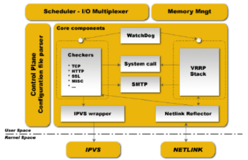
core keepalived的核心程序，如全局配置的解析，进程启动；
vrrp keepalived的vrrpd子进程以及相关的代码；
check keepalived的healthchecker子进程的目录，包括了所有的健康检查方式以及对应的配置的解析，LVS的配置解析也在里面；
libipfwc iptables(ipchains)库，用来配置LVS中的firewall-mark；
libipvs* 使用LVS需要。
多进程模式
keepalived采用多进程设计模式，每个进程负责不同功能：
111 Keepalived < 父进程：内存管理，监控子进程
112 \_ Keepalived < VRRP子进程
113 \_ Keepalived < healthchecker子进程
WatchDog
框架提供对子进程（VRRP和healthchecker）的监控。
Keepalived安装
1、安装openssl库。
Centos：yum install -y openssl openssl-devel
ubuntu：apt-get -insatll openssl libssl-dev libpopt-dev
2、tar -zxvf Keepalived***.tar.gz
3、cd keepalived***，./configure --prefix=/usr
4、make
5、make install
Keepalived安装目录介绍
/usr/sbin中包含可执行程序keepalived
/usr/etc/keepalived/中包含了配置文件和例子
/usr/etc/rc.d/init.d/keepalived作为service脚本
Keepalived配置
Keepalived配置分为三类：
1、全局配置（Global Configuration）
2、VRRPD配置
3、LVS配置
全局配置对整个keepalived起效，不管是否使用LVS。VRRPD是keepalived的核心，LVS配置只在要使用keepalived来配置和管理是需要使用。使用keepalived做HA（High Available）高可用集群，LVS配置完全是不需要的。
配置文件都是以块（block）形式组织的，每个块都在{ }包围范围内。配置文件在keepalived/etc/keepalived目录下。
全局配置
全局配置
全局配置包括两个配置，即全局定义（global definition）和静态地址路由（static ipaddress/routes）。
全局定义：主要设置keepalived的通知机制和标识。
global_defs
{
notification_email
{
admin@example.com
}
notification_email_from admin@example.com
smtp_server 127.0.0.1
stmp_connect_timeout 30
router_id my_hostname
}
l notification_email指定keepalived在发生事件（如切换）时，需要发送email到的对象，可以有多行。
l smtp_*指定发送email的smtp服务器，如果本地开启sendmail，可以使用上面默认配置。
l router_id运行keepalived的机器的一个标识。
静态地址和路由
静态路由（static）不会随vrrpd instance的开/关而变化，VIP不是静态的，会随着vrrpd而添加/删除。这个配置可以用来给服务器配置静态的IP地址/路由，
static_ipaddress
{
192.168.1.1/24 brd + dev eth0 scope global
static_routes
{
src $SRC_IP to $DST_IP dev $SRC_DEVICE
...
src $SRC_IP to $DST_IP via $GW dev $SRC_DEVICE
}
每一行设置一个IP，keepalived最终会直接使用ip addr add 192.168.1.1/24 brd+dev eth0 scope global添加，这些为全局配置的全部。
VRRPD配置
VRRP同步组（VRRP Sync Groups）
不使用Sync Group，如果机器有两个网段，一个内网一个外网，每个网段开启一个VRRP实例，如果VRRP配置为检查内网，在外网出现问题时，VRRPD认为自己仍然健康，就不会发送MASTER和BACKUP切换，从而导致问题。Sync group可以解决这些问题，可以把两个实例都放进一个Sync Group，group里任何一个实例出现问题都会发生切换。
vrrp_sync_group VG_1 {
group {
inside_network # 此为实例名（如VI_1）
outside_network
}
notify_master /path/to/to_master.sh
notify_backup /path_to/to_backup.sh
notify_fault "/path/fault.sh VG_1"
notify /path/to/notify.sh
smtp_alert
}
l notify_master指定当前切换到MASTER，执行的脚本，该脚本可以传入参数（引号包含），其他类推。
l notify指令有3个参数，该参数由keepalived提供：$1(GROUP_INSTANCE)，$2(group或instance的名字)，$3(MASTER_BACKUP_FAULT)。
l smtp_alter使用global_defs里面定义的邮件地址和smtp服务器在切换后发送邮件通知。
VRRP实例（instance）配置
VRRP实例表示开启了VRRP协议，该实例说明了VRRP的一些特性，如主从、VRID等，可以在每个interface上开启一个实例。VRRP实例配置主要定义vrrp_sync_group里面的每个组的漂移IP等。
vrrp_instance inside_network {
state MASTER
interface eth0
dont_track_primary
track_interface {
eth0
eth1
}
mcast_src_ip <IPADDR>
garp_master_delay 10
virtual_router_id 51
priority 100
advert_int 1
authentication {
auth_type PASS
autp_pass 1234
}
virtual_ipaddress {
#<IPADDR>/<MASK> brd <IPADDR> dev <STRING> scope <SCOPT> label <LABEL>
192.168.200.17/24 dev eth1
192.168.200.18/24 dev eth2 label eth2:1
}
virtual_routes {
# src <IPADDR> [to] <IPADDR>/<MASK> via|gw <IPADDR> dev <STRING> scope <SCOPE> tab
src 192.168.100.1 to 192.168.109.0/24 via 192.168.200.254 dev eth1
192.168.110.0/24 via 192.168.200.254 dev eth1
192.168.111.0/24 dev eth2
192.168.112.0/24 via 192.168.100.254
}
nopreempt
preemtp_delay 300
debug
}
state state指定instance的初始（Initial）状态，在两台router都启动后，马上会发生竞选，高priority会竞选为Master，该state并不表示这台一直时MASTER。
interface inside_network实例绑定的网卡。
dont_track_primary 忽略VRRP的interface错误（默认不设置）。
track_interface 设置额外的监控，里面的任意一个网卡出现问题，都会进入FAULT状态。
mcast_src_ip 发送多播包的地址，如果不设置，默认使用绑定的网卡primary IP。
garp_master_delay 在切换到MASTER状态后，延迟进行gratuitous ARP请求。
virtual_router_ip VRID标记（0--255）
priority 100 高优先级竞选为MASTER,MASTER至少高于BACKUP 50。
advert_int 检查间隔，默认1s。
virtual_ipaddress 指定漂移地址（VIP），切换到MASTER时，这些IP会被添加，切换到BACKUP时，这些IP被删除，所以每台服务器上可以不绑定任何虚拟地址，而都把他们放virtual_ipaddress里面（可以多个），keepalived会自动使用ip addr进行绑定。
virtual_routes 和virtual_ipaddress一样，发生切换时添加/删除路由。
lvs_sync_daemon_interface lvs syncd绑定的网卡。
authentication 设置认证。
auth_type 认证方式，支持PASS和AH。
auth_pass 认证密码。
nopreempt 设置为不抢占，该配置只能设置在state为BACKUP的主机上，而且该主机priority必须比另外一台高。
preempt_delay 抢占延迟，默认5分钟。
debug Debug级别。
notify_master 和sync group配置一样。
LVS配置
LVS的配置包括虚拟主机组（virtual server group）和虚拟主机（virtual server）。这些配置都会传递给ipvsadm作为参数。
虚拟主机组
该配置段可选，目的让一台RealServer上的某个service可以属于多个Virtual Server，并且只做一次健康检查。
virtual_server_group <STRING> {
# VIP port
<IPADDR> <PORT>
<IPADDR> <PORT>
.....
fwmark <INT>
}
虚拟主机
virtual_server可以用如下3中配置：
1、virtual_server IP port
2、virtual_server fwmark int
3、virtual_server group string
virtual_server 192.168.1.2 80 { # 设置一个virtual server: VIP:Vport
delay_loop 3 # service polling的delay时间ž
lb_algo rr|wrr|lc|wlc|lblc|sh|dh # LVS的调度算法
lb_kind NAT|DR|TUN #LVS集群模式
persistence_timeout 120 #会话保持时间
persistence_granularity <NETMASK> # LVS会话保持粒度
protocol TCP #使用协议TCP或UDP
ha_suspend # suspendhealthchecker’s activity
virtualhost <string> # HTTP_GET做健康检查时，检查的Web服务器的虚拟机（即Host：头）
sorry_server <IPADDR> <PORT> #备用机，所有real server失效后启用
# 每台RealServer都需要一个如下配置项
real_server <IPADDR> <PORT>
{
weight 1 #默认为1，0失效
inhibit_on_failure #在服务器健康检查失败时，将其weight设置为0，而不是直
notify_up <STRING> | <QUOTED-STRING> #在检测到service up后执行脚本
notify_down <STRING> | <QUOTED-STRING> #在检测service down执行脚本
# 配置健康检查:HTTP_GET|SSL_GET|TCP_CHECK|SMTP_CHECK|MISC_CHECK
HTTP_GET | SSL_GET
{
url { # HTTP/SSL检查的URL，可指定多个URL
path /
digest <STRING> # SSL检查后的摘要信息
status_code 200 #HTTP检查的返回状态码
}
connect_port 80 #检查健康端口
#以此地址发送请求对服务器进行健康检查
bindto <IPADD>
connect_timeout #连接超时时间
nb_get_retry 3 #重连次数
delay_before_retry 2 #重连间隔时间
} # END OF HTTP_GET|SSL
# TCP 方式检查
TCP_CHECK {
connect_port 80
bindto 192.168.1.1
connect_timeout 4
} # TCP_CHECK
# SMTP方式健康检查
SMTP_CHECK{
host {
connect_ip <IP ADDRESS>
connect_port <PORT> #默认检查25端口
bindto <IP ADDRESS>
}
connect_timeout <INTEGER>
retry <INTEGER>
delay_before_retry <INTEGER>
# "smtp HELO"请求命令的参数，可选
helo_name <STRING>|<QUOTED-STRING>
} #SMTP_CHECK
#MISC健康检查方式，执行程序
MISC_CHECK
{
#外部程序或脚本路径
misc_path <STRING>|<QUOTED-STRING>
#脚本执行的超时时间
misc_timeout <INT>
#如果设置了misc_dynamic，healthchecker程序退出状态码会用来动态调整服务器权重（weight）
#返回0：健康检查OK，权重不被修改
#返回1：健康检查失败，权重设为0
#返回2--255：健康检查OK，权重设置：退出状态码-2，如返回255，则weight=255-2=253
misc_dynamic
}
} # Realserver
} # Virtual Server
Nginx+Keepalived负载均衡高可用（HA）
负载均衡高可用
nginx作为负载均衡器，所有请求都到nginx，如果nginx宕机，后端web服务将无法提供服务，产生严重的生产事件。
为了解决负载均衡服务器的宕机问题，需要建立一个备份机。主服务器和备份机都允许高可用（High Availabity）监控程序，通过传输信息监控双方的运行状况。当备份机不能在一定时间内收到这样的信息，它就接管主服务器IP并继续提供均衡负载服务；当备份管理器再次收到主管理器信息时，它就释放服务IP地址，主服务就开始再次提供负载均衡服务。
keepalived+nginx实现主备
keepalived是集群管理中保证集群高可用的一个服务软件，用来防止单点故障。
keepalived作用是检测web服务器的状态，如果由有一台web服务器宕机，或者故障，keepalived将检测到，并将故障web服务器从系统中剔除，当web服务器工作正常后keepalived自动将web服务器加入到服务器集群中，这些工作自动完成，只需要人工修复故障的web服务器。
keepalived工作原理
keepalived是以VRRP协议为基础实现的，VRRP全称Virtual Router Redundancy Protocol即虚拟路由冗余协议。
虚拟路由冗余协议是实现路由器高可用的协议，即将多台提供相同功能的路由器组成一个路由器组，该组有一个master和多个backup，master上面有一个对外提供服务的vip(Virtual IP Address，即虚拟IP地址，该路由器所在局域网内其他机器默认路由为该vip），master会发组播，当backup收不到VRRP包时就认为master宕掉了，此时需要根据VRRP优先级来选举一个backup当master。可以保证路由器的高可用。
keepalived主要有三个模块，分别是core、check、VRRP。core模块为keepalived的核心，负责主进程的启动、维护以及全局配置文件的加载和解析。check负责健康检查，包括常见的各种检查方式。VRRP模块是来实现VRRP协议的。
keepalived+nginx实现主备过程
初始状态
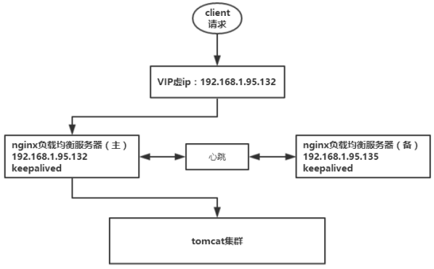
主机宕机
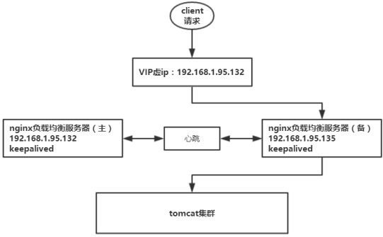
主机恢复
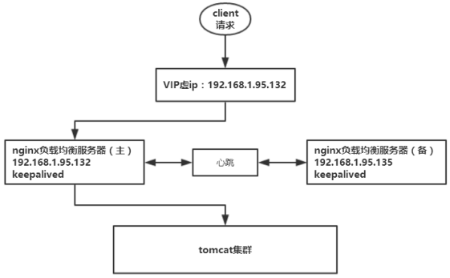
高可用环境
两台nginx服务器，主服务器：192.168.195.132，备用服务器193.168.195.135。
两台tomcat服务器：192.168.195.132:8080，192.168.195.132:8081。
keepalived在ubuntu环境下安装配置
1、tar -zxvf Keepalived***.tar.gz
2、cd keepalived***，./configure --prefix=/usr
3、make
4、make install
5、cp /usr/etc/rc.d/init.d/keepalived /etc/init.d/
6、修改/etc/init.d/keepalived
#. /etc/rc.d/init.d/functions
. /lib/lsb/init-functions
#. /etc/sysconfig/keepalived
. /usr/etc/sysconfig/keepalived
#daemon keepalived ${KEEPALIVED_OPTIONS}
daemon keepalived start
7、将该主机/etc/init.d/keepalived文件拷贝至另一台主机
scp /etc/init.d/keepalived 192.168.195.135:/etc/init.d/
8、如果没有一下目录则创建
mkdir -p /var/lock/subsys
9、设置为系统服务
update-rc.d keepalived default
10、安装daemon服务
apt-get install daemon
11、keepalived开启
service keepalived start
keepalived关闭
service keepalived stop
keepalived主从配置
主nginx
修改nginx下/etc/keepalived/keepalived.conf文件
global_defs { notification_email { #指定keepalived在发生切换时需要发送email到的对象，可写多行 649542997@qq.com } 649542997@qq.com #指定发件人 #smtp_server 192.168.200.1 #指定smtp服务器地址 #smtp_connect_timeout 30 #指定smtp连接超时时间 router_id LVS_DEVEL #运行keepalived机器的标识 } vrrp_instance VI_1 { state MASTER #标示状态主机MASTER备份机BACKUP interface ens33 #设置绑定实例的网卡 virtual_router_id 51 #同一个实例下virtual_router_ip必须相同 priority 100 #权重，MASTER高于BACKUP，例BACKUP为99 advert_int 1 #MASTER与BACKUP负载均衡器之间同步检查的时间间隔（秒） authentication { #设置认证 auth_type PASS #主从服务器验证方式 auth_pass lwsh } virtual_ipaddress { #设置vip 192.168.195.22 #可设置多个虚拟ip 192.168.195.21 } } |
备nginx
修改备nginx下/etc/keepalived/keepalived.conf文件
需要修改state为BACKUP，priority比MASTER低，virtual_router_id和MASTER一致。
global_defs { notification_email { #指定keepalived在发生切换时需要发送email到的对象，可写多行 649542997@qq.com } 649542997@qq.com #指定发件人 #smtp_server 192.168.200.1 #指定smtp服务器地址 #smtp_connect_timeout 30 #指定smtp连接超时时间 router_id LVS_DEVEL #运行keepalived机器的标识 } vrrp_instance VI_1 { state MASTER #标示状态主机MASTER备份机BACKUP interface ens33 #设置绑定实例的网卡 virtual_router_id 51 #同一个实例下virtual_router_ip必须相同 priority 99 #权重，MASTER高于BACKUP，例BACKUP为99 advert_int 1 #MASTER与BACKUP负载均衡器之间同步检查的时间间隔（秒） authentication { #设置认证 auth_type PASS #主从服务器验证方式 auth_pass lwsh } virtual_ipaddress { #设置vip 192.168.195.22 #可设置多个虚拟ip 192.168.195.21 } } |
nginx配置
修改nginx.conf文件，并创建/var/run/nginx目录
http { include mime.types; sendfile on; keepalive_timeout 65; upstream tomcat_server1{ server 192.168.195.132:8080; } upstream tomcat_server1{ server 192.168.195.132:8081; } server { listen 80; server_name www.lwsh.com; location / { proxy_pass http://tomcat_server1; index index.html index.htm; } error_page 500 502 503 504 /50x.html; location = /50x.html { root html; } } server { listen 80; server_name www.lwsh.cn; location / { proxy_pass http://tomcat_server2; index index.html index.htm; } error_page 500 502 503 504 /50x.html; location = /50x.html { root html; } } } |
HA高可用测试
启动主备服务
启动主备nginx以及keepalived。
service keepalived start
./nginx
修改访问系统host文件
192.168.195.22 www.lwsh.com
192.168.195.22 www.lwsh.cn
初始状态
查看主nginx的ens33设置/sbin/ip add show ens33，vip绑定在主nginx的ens33上。
root@lwsh:~# /sbin/ip add show ens33 2: ens33: <BROADCAST,MULTICAST,UP,LOWER_UP> mtu 1500 qdisc pfifo_fast state UNKNOWN group default qlen 1000 link/ether 00:0c:29:ba:c7:3f brd ff:ff:ff:ff:ff:ff inet 192.168.195.132/24 brd 192.168.195.255 scope global dynamic ens33 valid_lft 1425sec preferred_lft 1425sec inet 192.168.195.22/32 scope global ens33 valid_lft forever preferred_lft forever inet 192.168.195.21/32 scope global ens33 valid_lft forever preferred_lft forever inet6 fe80::f02e:4140:51d0:ba04/64 scope link valid_lft forever preferred_lft forever |
查看备nginx的ens33设置/sbin/ip add show ens33，vip没有绑定在备nginx的ens33上。
root@lwsh:/usr/local/nginx/sbin# /sbin/ip add show ens33 2: ens33: <BROADCAST,MULTICAST,UP,LOWER_UP> mtu 1500 qdisc pfifo_fast state UNKNOWN group default qlen 1000 link/ether 00:0c:29:d8:6a:c3 brd ff:ff:ff:ff:ff:ff inet 192.168.195.135/24 brd 192.168.195.255 scope global dynamic ens33 valid_lft 1026sec preferred_lft 1026sec inet6 fe80::6be9:ac1b:2da3:fb7f/64 scope link valid_lft forever preferred_lft forever |
访问www.lwsh.com、www.lwsh.cn
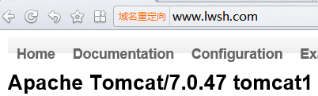 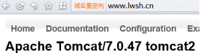
模拟主机宕机
关闭主服务
./nginx -s reload
service keepalived stop
查看主备服务器状态
查看主nginx的ens33，ens33没有绑定vip。
root@lwsh:/usr/local/nginx/sbin# /sbin/ip add show ens33 2: ens33: <BROADCAST,MULTICAST,UP,LOWER_UP> mtu 1500 qdisc pfifo_fast state UNKNOWN group default qlen 1000 link/ether 00:0c:29:ba:c7:3f brd ff:ff:ff:ff:ff:ff inet 192.168.195.132/24 brd 192.168.195.255 scope global dynamic ens33 valid_lft 1101sec preferred_lft 1101sec inet6 fe80::f02e:4140:51d0:ba04/64 scope link valid_lft forever preferred_lft forever |
查看备nginx的ens33，vip以漂移到备nginx。
root@lwsh:/usr/local/nginx/sbin# /sbin/ip add show ens33 2: ens33: <BROADCAST,MULTICAST,UP,LOWER_UP> mtu 1500 qdisc pfifo_fast state UNKNOWN group default qlen 1000 link/ether 00:0c:29:d8:6a:c3 brd ff:ff:ff:ff:ff:ff inet 192.168.195.135/24 brd 192.168.195.255 scope global dynamic ens33 valid_lft 1154sec preferred_lft 1154sec inet 192.168.195.22/32 scope global ens33 valid_lft forever preferred_lft forever inet 192.168.195.21/32 scope global ens33 valid_lft forever preferred_lft forever |
恢复主机
将nginx的keepalived和nginx启动。
service keepalived start
./nginx
查看主备服务器状态
查看主nginx的ens33，vip漂移到主nginx。
root@lwsh:/usr/local/nginx/sbin# /sbin/ip add show ens33 2: ens33: <BROADCAST,MULTICAST,UP,LOWER_UP> mtu 1500 qdisc pfifo_fast state UNKNOWN group default qlen 1000 link/ether 00:0c:29:ba:c7:3f brd ff:ff:ff:ff:ff:ff inet 192.168.195.132/24 brd 192.168.195.255 scope global dynamic ens33 valid_lft 1489sec preferred_lft 1489sec inet 192.168.195.22/32 scope global ens33 valid_lft forever preferred_lft forever inet 192.168.195.21/32 scope global ens33 valid_lft forever preferred_lft forever |
查看备nginx的ens33，ens33没有绑定vip。
root@lwsh:/usr/local/nginx/sbin# /sbin/ip add show ens33 2: ens33: <BROADCAST,MULTICAST,UP,LOWER_UP> mtu 1500 qdisc pfifo_fast state UNKNOWN group default qlen 1000 link/ether 00:0c:29:d8:6a:c3 brd ff:ff:ff:ff:ff:ff inet 192.168.195.135/24 brd 192.168.195.255 scope global dynamic ens33 valid_lft 1642sec preferred_lft 1642sec inet6 fe80::6be9:ac1b:2da3:fb7f/64 scope link valid_lft forever preferred_lft forever |
解决nginx进程和keepalived不同时存在
问题描述
keepalived是通过检测keepalived进程是否存在判断服务器是否宕机，如果keepalived进程存在而nginx进程不存在，那么keepalived则不会做主备切换。通过脚本监控nginx进程是否存在，如果nginx不存在就将keepalived进程杀掉。
nginx进程检测脚本
在主nginx上编写nginx进程检测脚本，判断nginx进程是否存在，如果nginx不存在就将keepalived进程杀掉，check_nginx.sh脚本如下：
#!/bin/bash A=`ps -C nginx --no-header|wc -l` if [ $A -eq 0 ];then service keepalived stop fi |
将nginx停止，keepalived启动，执行脚本：sh /etc/keepalived/check_nginx.sh
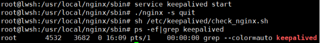
其中自动将keepalived进程kill掉了。
配置keepalived.conf
修改主nginx的keepalived.conf，添加脚本定义检测：
! Configuration File for keepalived global_defs { notification_email { 649542997@qq.com } 649542997@qq.com #smtp_server 192.168.200.1 #smtp_connect_timeout 30 router_id LVS_DEVEL } vrrp_script check_nginx { script "/etc/keepalived/check_nginx.sh" ##监控脚本 interval 2 ##时间间隔，2秒 weight 2 ##权重 } vrrp_instance VI_1 { state MASTER #标示状态为MASTER 备份机为BACKUP interface ens33 #设置实例绑定的网卡 virtual_router_id 51 #同一实例下virtual_router_id必须相同 priority 100 #MASTER权重要高于BACKUP 比如BACKUP为99 advert_int 1 #MASTER与BACKUP负载均衡器之间同步检查的时间间隔（秒） authentication { #设置认证 auth_type PASS #主从服务器验证方式 auth_pass lwsh } track_script { check_nginx #监控脚本 } virtual_ipaddress { #设置vip 192.168.195.22 #可以多个虚拟IP，换行即可 192.168.195.21 #可以多个虚拟IP，换行即可 } } |
启动nginx、keepalived，查看keepalived进程：
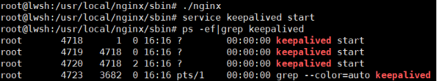
关闭主nginx服务器nginx服务，查看keepalived进程以及vip：
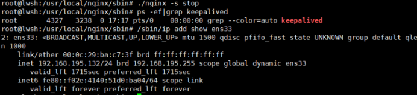
查看备nginx服务器vip：
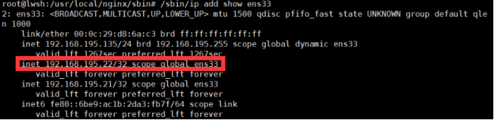
启动主nginx服务器nginx服务以及keepalived，查看keepalived进程和vip：
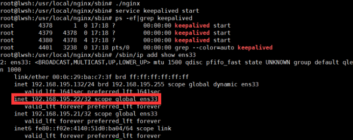
查看备nginx服务器vip：
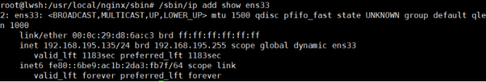
Redis应用
redis
redis介绍
redis是开源的高性能键值对（key-value）数据库，提供多种键值数据类型:
字符串类型：string；
散列类型：hash；
列表类型：list；
集合类型：set；
有序集合类型：sorted set。
redis安装
1、tar -zxvf redis-***.tar.gz
2、cd redis-***
3、make
4、make install
5、make install PREFIX=/usr/local/redis
6、cp /usr/local/redis-*** /usr/local/redis/bin/
redis服务端启动
redis启动执行命令：./redis-server redis.conf，该方式为前端启动，占用ssh命令窗口，如下：
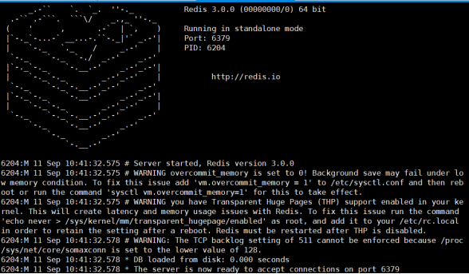
修改redis.con配置文件，daemonize yes，采用后端模式启动，如下：
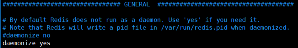
redis客户端连接
本机连接，采用默认端口时，执行命令：./redis-cli。
修改默认端口如6800，执行命令：./redis-cli -p 6800。
远程主机连接，执行命令：./redis -h 192.168.195.132 -p 6800。
客户端退出命令在redis-cli端执行：quit。
redis服务端关闭
第一种方式，本机执行命令：./redis-cli shutdown，远程主机执行命令：./redis-cli -h 192.168.195.132 -p 6379 shutdown。
第二种方式，查询redis服务进程号，使用kill命令杀掉进程，如下：
root@lwsh:/usr/local/redis/bin# ps -ef|grep redis
root 6283 1 0 10:57 ? 00:00:00 ./redis-server *:6379
root 6287 2677 0 10:58 pts/0 00:00:00 grep --color=auto redis
root@lwsh:/usr/local/redis/bin# kill 6283
redis常用类型与命令
key相关指令
exists key检测指定key是否存在，返回1表示存在，0不存在。
del key1 key2 ... 删除指定的key，返回删除的key的数据，0表示都不存在。
type key 返回key的类型，如sting，list等。
keys pattern 返回匹配指定模式的所有key，如keys *返回所有key，key n*返回以n开头的所有key，keys *n返回以n结尾的所有key。
rename oldkey newkey 重命名key，如果newkey存在将备覆盖。
expire key seconds 指定key的过期时间，单位为秒。
ttl key 查看key的剩余存活时间。
select db 通过索引选择数据库，redis默认连接数据库是0，默认数据库数是16个。
move key db 将key从当前数据库移动到指定数据库。
string类型与命令
string是最基本的类型且二进制安全（二进制安全对输入的任何字节都能正确处理，不会解释数据，如不会对字符’\0’进行特殊解释，在C语言中strlen函数不是二进制安全，’\0’会作为字符串是否结束，对字符串”abc\0def”来讲长度为3不为7）。redis的string可以包含任何数据，如jpg图片或序列化对象。string可看作byte数组，上限为1G。
set key value 设置key对应的string类型值value，返回1成功，0失败。
setnx key value 如果key不存在，设置key对应的value。存在返回0。
get key 获取key对应的value，key不存在返回nil。
mset key1 ...keyN value1 ...valueN 一次设置多个key的值。
mget key1 ...keyN 一次获取多个key的值。
incr key 对key为int的value进行++操作。
decr key 对key为int的value进行--操作。
incrby key integer 对key加上指定值。
decrby key integer 对key减去指定值。
hash类型与命令
hash是string类型的field和value的映射表。添加、删除操作都是0(1)（平均）。hash适用于存储对象。将对象存储在hash类型中占用更少内存，可方便存取整个对象。
hset key field value 设置hash field为指定值。
hget key field 获取指定的hash field。
hmset key field1 ...fieldN value1 ...valueN同时设置hash的多个field。
hmget key field ...fieldN 同时获取多个hash field。
hincrby key field integer 将指定的hash field 加上指定值。
hexists key field 检测指定field是否存在。
hdel key field 删除指定hash field。
hlen key 返回指定hash的field数量。
hkeys key 返回hash的所有field。
hvals key 返回hash的所有field。
hgetall key 返回所有hash的filed和value。
list类型与命令
list是链表结构，每个子元素大都是string类型的双向链表。主要功能是push、pop、获取一个范围的值。
lpush key string 在key对应的list头部添加字符串元素。
rpush key string 在key对应的list尾部添加字符串元素。
lpop key 从list头部删除并返回删除元素。
rpop key 从list尾部删除并返回删除元素。
lrange key start end 返回从start到end区间的元素。lrange key 0 -1返回key的所有值。
lset key index value 设置list指定下标的值。
set类型与命令
set是无序集合。set集合类型有基本的添加删除操作外，还包含集合的并集（union），交集（intersection），差集（difference）。通过这些操作可以容易实现好友推荐和blog的tag功能。
sadd key member 添加一个string元素到key对应set集合中。
srem key member 从key中对应的set中移除指定元素。
scard key 返回set的元素个数。
sinter key1 ...keyN 返回所有给定key的交集。
sunion key1 ...keyN 返回所有给定key的并集。
sdiff key1 ...keyN 返回所有给定key的差集。
sismember key member 判断member是否在set中。
sismembers key 返回key所有元素。
sorted set类型与命令
sorted set是有序集合，在set基础上增加了一个顺序属性，在添加修改元素时可以指定，每次指定后，会自动重新按新的值调整顺。可用于搜索的rank排名。
add key score member 添加元素到集合，元素在集合中存在则更新score。
zrem key member 删除指定元素。
zincrby key incr member 增加对应member的score值。
zrank key member 返回指定元素在集合中的排名。
zcard key 返回集合中元素个数。
zscore key element 返回给定元素对应的score。
redis持久化
快照方式
该方式将内存中数据以快照的方式写入二进制文件，默认的文件名为dump.rdb。
客户端可使用save或bgsave命令通知redis做一次快照持久化。save操作在主线程中保持快照，redis是用一个主线程处理所有客户端请求，该方式会阻塞所有客户端请求不推荐。每次快照持久化都是将内存数据完整写入到磁盘一次，不是增量的只同步增量数据。如果数据量大，写操作会比较多，会引起大量的磁盘IO操作，可能会影响性能。
日志追加方式
该方式redis每一个收到的写命令都通过write函数追加到文件中（默认appendonly.aof）。当redis重启会通过重新执行文件中保持的写命令在内存中重建整个数据库内容。当由于操作系统会在内核缓存write做的修改，所以可能不是立即写到磁盘。该持久化有可能会丢失部分修改。但可以通过配置文件告诉redis通过fsync函数强制操作系统写入磁盘的时机。
appendonly yes //启用日志追加持久化方式
appendfsync always //每次收到写命令就立即强制写入磁盘，最慢
appendfsync everysec //每秒强制写入磁盘一次，在性能和持久化做了很好的平衡
appendfsync no //依赖操作系统，性能最好，持久化每保证。
redis高可用模式
redis主从模式
修改从redis的配置文件，添加主redis节点，如下：
# slaveof <masterip> <masterport>
slaveof 192.168.195.132 6379
启动主从redis，主redis可写可读，从redis只能读不能写，从redis写时会报一个错误，(error) READONLY You can't write against a read only slave。
在redis-cli端输入info查看详细信息。
主redis 192.168.195.132 | 从redis 192.168.195.135 | 从redis 192.168.195.136 |
# Server ...... # Replication role:master 角色主redis ...... # CPU used_cpu_sys:0.05 used_cpu_user:0.02 used_cpu_sys_children:0.00 used_cpu_user_children:0.00 # Cluster ...... # Keyspace db0:keys=1,expires=0,avg_ttl=0 | 127.0.0.1:6379> INFO # Server ...... # Replication role:slave 角色从redis master_host:192.168.195.132 master_port:6379 # CPU used_cpu_sys:0.02 used_cpu_user:0.02 used_cpu_sys_children:0.00 used_cpu_user_children:0.00 ...... # Keyspace db0:keys=1,expires=0,avg_ttl=0 | 127.0.0.1:6379> info # Server ...... # Replication role:slave 角色从redis master_host:192.168.195.132 master_port:6379 # CPU used_cpu_sys:0.25 used_cpu_user:0.06 used_cpu_sys_children:0.00 used_cpu_user_children:0.00 ...... # Keyspace db0:keys=1,expires=0,avg_ttl=0 |
redis哨兵模式
三台redis服务器，Master的ip为192.168.195.132，slave1的ip为192.168.195.135，slave2的ip为195.168.195.135。
修改从redis配置文件redis.conf
# slaveof <masterip> <masterport>
slaveof 192.168.195.132 6379
将redis安装目录的sentinel.conf文件拷贝至slave1的redis中的etc目录。
修改sentinel.conf文件：
port 26379 daemonize yes dir "/tmp" sentinel monitor mymaster 192.168.195.136 6379 1 sentinel down-after-milliseconds mymaster 3000 sentinel failover-timeout mymaster 1800 |
sentinel monitor mymaster 192.168.195.132 6379 1对应分别时名称、ip、端口以及选举投票的次数（当master服务器宕机后，剩下的服务器则进行投票选举主服务器）。
sentinel down-after-milliseconds mymaster 3000 每3秒检测一次集群。
sentinel failover-timeout mymaster 1800 主从redis服务器故障切换时间。
启动三台redis服务器./redis/bin/redis-server ./redis/bin/redis.conf --sentinel，在slave1中启动哨兵模式，./redis/bin/redis-sentinel ./redis/etc/sentinel.conf --sentinel。
查看哨兵状态，./redis-cli -h 192.168.195.136 -p 26379 info sentinel。
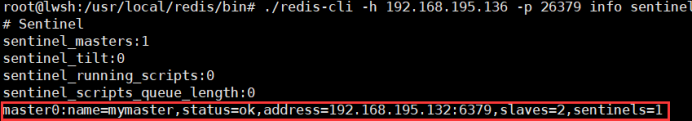
关闭master主redis服务器，重新选举master主redis服务器，查看哨兵状态。
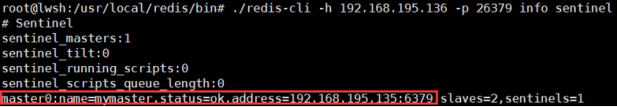
启动132redis服务器，关闭135redis服务器，将再次选举master主redis服务器。
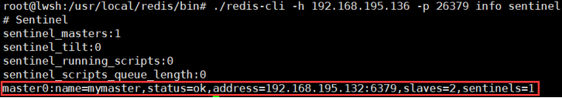
redis集群模式
redis 3推出了集群技术，解决多redis实例协同服务问题，也是主流的redis高可用采用的模式。
redis集群介绍
redis-cluster架构图
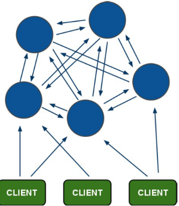
1、所有redis节点彼此互联（PING-PONG机制），使用二进制协议优化传输速度和带宽。
2、节点的fail是通过集群超过半数的节点检测失效才生效。
3、客户端与redis直连，不需要中间proxy层。客户端不需要连接集群所有节点，连接集群中一个节点即可。
4、redis-cluster把所有物理节点映射到[0-16383]slot上，cluster负责维护node<->slot<->value。
redis集群内置了16384个哈希槽，当需要在redis集群中放置一个key-value时，redis先对key使用crc16算法计算结果，再用结果对16384求余，每个key都会对应一个编号在0-16383之间的哈希槽，redis将根据节点数量大致均等的将哈希槽映射到不同的节点。
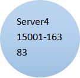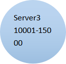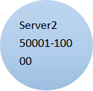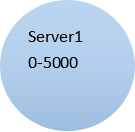5、redis哈希槽分布实例如下：
计算a的hash值，例如100，100的槽在server1上，所以a在server1上。
计算b的hash值，例如10010，槽在server3上，b则在server3上。
redis-cluster投票：容错
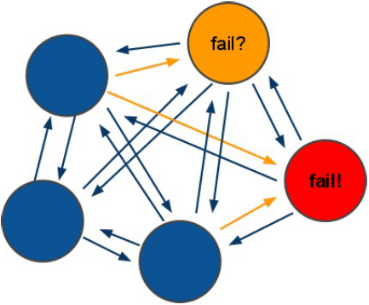
1、投票过程是集群中所有master参与，如果半数以上的master节点与master节点通信超时（cluster-node-timeout），认为当前master节点挂掉。
2、集群不可用的情况（cluster_state:faile）
a) 如果集群任意master挂掉，且master没有slave集群进入fail状态，可理解成集群的slot 映射[0-16283]不完成时进入fail状态。
b) 如果超过半数的master挂掉，无论是否有slave集群进入fail状态。
集群环境
集群架构
集群有三个节点，每个节点有一主一从。
搭建集群所需环境
安装ruby环境
centos：
yum install ruby
yum install rubygems
ubuntu：
apt-get install ruby
apt-get install rubygems
redis集群部署
上传redis-3.0.0.gem
gem install redis-3.0.0.gem
集群搭建
1、部署3台redis服务器，每台服务器都有一主一从，端口分别为6379、6479
主redis目录结果 | 从redis目录结构 |
root@lwsh:/usr/local# tree master/ master/ ├── bin │ ├── redis-benchmark │ ├── redis-check-aof │ ├── redis-check-dump │ ├── redis-cli │ ├── redis.conf │ ├── redis-sentinel -> redis-server │ └── redis-server └── data ├── master.aof ├── master.rdb └── nodes-master.conf | root@lwsh:/usr/local# tree slave/ slave/ ├── bin │ ├── redis-benchmark │ ├── redis-check-aof │ ├── redis-check-dump │ ├── redis-cli │ ├── redis.conf │ ├── redis-sentinel -> redis-server │ └── redis-server └── data ├── nodes-slave.conf ├── slave.aof └── slave.rdb |
2、修改redis.conf配置文件
修改服务器主redis配置文件 | 修改服务器从redis配置文件 |
后端模式 daemon yes 端口 port 6379 修改rdb名称 dbfilename master.rdb 文件存储路径 dir /usr/local/master/data 开启日志追加方式 appendonly yes aof文件名 appendfilename “master.aof” 绑定ip bind 192.168.195.*** cluster模式 cluster yes 配置node文件 cluster-config-file node-master.conf 集群超时时间 cluster-node-timeout 5000 | 后端模式 daemon yes 端口 port 6479 修改rdb名称 dbfilename slave.rdb 文件存储路径 dir /usr/local/slave/data 开启日志追加方式 appendonly yes aof文件名 appendfilename “slave.aof” 绑定ip bind 192.168.195.*** cluster模式 cluster yes 配置node文件 cluster-config-file node-slave.conf 集群超时时间 cluster-node-timeout 5000 |
3、主从redis启动脚本redis-start.sh
masterpath=/usr/local/master/data/ slavepath=/usr/local/slave/data/ masterbackup=/opt/master/ slavebackup=/opt/slave/ if [ "`ls -A "$masterpath"`" = "" ];then echo "file is empty!" /usr/local/master/bin/redis-server /usr/local/master/bin/redis.conf else if [ ! -d "$masterbackup" ];then mkdir -p "$masterbackup" mv /usr/local/master/data/* "$masterbackup" else mv /usr/local/master/data/* "$masterbackup" fi /usr/local/master/bin/redis-server /usr/local/master/bin/redis.conf fi if [ "`ls -A "$slavepath"`" = "" ];then echo "file is empty!" /usr/local/slave/bin/redis-server /usr/local/slave/bin/redis.conf else if [ ! -d "$slavebackup" ];then mkdir -p "$slavebackup" mv /usr/local/slave/data/* "$slavebackup" else mv /usr/local/slave/data/* "$slavebackup" fi /usr/local/slave/bin/redis-server /usr/local/slave/bin/redis.conf fi |
4、主从redis关闭脚本redis-shutdown.sh
/usr/local/master/bin/redis-cli -c -h 192.168.195.132 -p 6379 shutdown /usr/local/slave/bin/redis-cli -c -h 192.168.195.132 -p 6479 shutdown |
参数-c表示集群模式。
5、启动redis集群脚本redis-cluster.sh
/usr/local/redis-***/src/redis-trib.rb create --replicas 1 192.168.195.132:6379 192.168.195.135:6379 192.168.195.136:6379 192.168.195.132:6479 192.168.195.135:6479 192.168.195.136:6479 |
create表示创建集群。
--replicas 1表示每个主节点有一个从节点，其中按照redis节点顺序创建主从，前三个redis节点为master，后三个节点为slave。
注意：
如果执行时报如下错误：
[ERR] Node XXXXXX is not empty. Either the node already knows other nodes (check with CLUSTER NODES) or contains some key in database 0。解决方法是删除生成的配置文件nodes.conf，如果不行则说明现在创建的结点包括了旧集群的结点信息，需要删除redis的持久化文件后再重启redis，比如：appendonly.aof、dump.rdb
启动集群，sh redis-cluster.sh
创建三个主节点，三个从节点，每个主节点平均分配5462个slot，从节点不分配slot。

集群使用
查询集群信息
redis集群创建成功后，可登陆任意节点查询集群的节点状态。
客户端以集群方式登陆， ./redis-cli -c -h 192.168.195.132 -p 6379
查询集群节点信息cluster nodes
192.168.195.132:6379> cluster nodes 6a607eaa62b3d5739ab976370183bf930331806d 192.168.195.132:6379 myself,master - 0 0 1 connected 0-5460 115f0ac29c44b8ea581ca6e55c2aed07a2f79c4a 192.168.195.132:6479 slave afe748433880d39da0c961ba4531e7a1a449bd7d 0 1505282325405 4 connected 5bdffbc94e256be8c59c17f64d9c767430c51242 192.168.195.136:6479 slave 923a82c84d6f7dd21d1e0065616437b638bf1fa5 0 1505282323389 6 connected 7ea759ecf54d93c58dabb3cc82a033ee1adb87c1 192.168.195.135:6479 slave 6a607eaa62b3d5739ab976370183bf930331806d 0 1505282324397 5 connected 923a82c84d6f7dd21d1e0065616437b638bf1fa5 192.168.195.136:6379 master - 0 1505282326417 3 connected 10923-16383 afe748433880d39da0c961ba4531e7a1a449bd7d 192.168.195.135:6379 master - 0 1505282322380 2 connected 5461-10922 |
查询集群状态cluster info
192.168.195.132:6379> cluster info
cluster_state:ok
cluster_slots_assigned:16384
cluster_slots_ok:16384
cluster_slots_pfail:0
cluster_slots_fail:0
cluster_known_nodes:6
cluster_size:3
cluster_current_epoch:6
cluster_my_epoch:1
cluster_stats_messages_sent:382
cluster_stats_messages_received:382
集群操作
任意客户端连接集群./redis-cli -c -h 192.168.195.135 -p 6379
192.168.195.135:6379> set name lwsh
OK
192.168.195.135:6379> set age 22
-> Redirected to slot [741] located at 192.168.195.132:6379
OK
192.168.195.132:6379>
第一次set name lwsh 计算的槽slot为5798，该槽再192.168.195.135上，所以客户端未切换。第二次set age 22 计算的槽slot未741，该槽再192.168.195.132上，所以客户端切换为192.168.195.132:6379。
在获取key的值时，该key对应的slot不在该客户端也会发生客户端切换，如下：
192.168.195.132:6379> get name
-> Redirected to slot [5798] located at 192.168.195.135:6379
"lwsh"
192.168.195.135:6379> get age
-> Redirected to slot [741] located at 192.168.195.132:6379
"22"
192.168.195.132:6379>
添加主节点
向集群中添加7379主节点。
执行：./redis-3.0.0/src/redis-trib.rb add-node 192.168.195.132:7379 192.168.195.132:6379
输出：
........
>>> Send CLUSTER MEET to node 192.168.195.132:7379 to make it join the cluster.
[OK] New node added correctly.
登陆集群查看集群节点信息，7379节点加入了集群。
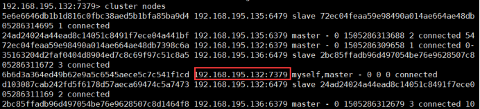
hash槽重新分配
添加完主节点需要对主节点进行hash槽分配，主节点才可以存储数据。
7379分配hash槽
1、连接集群
./redis-3.0.0/src/redis-trib.rb reshard 192.168.195.132:6379
2、输入7379节点的槽数量，如4000
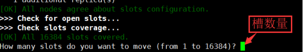
3、输入接收槽的id
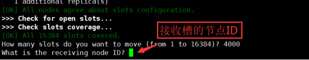
给节点7379分配槽，通过cluster nodes查看7379节点ID为6b6d3a364ed49b62e9a5c6545aece5c7c541f1cd。
4、输入源节点ID，这里输入all
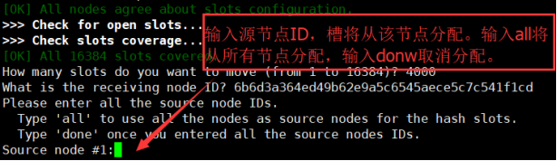
5、输入yes开始移动槽到目标节点7379
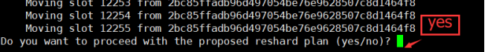
6、查看集群节点状态以及槽分配
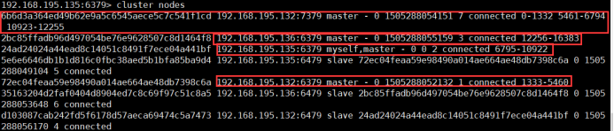
添加从节点
向集群添加7479从节点。
执行：./redis-3.0.0/src/redis-trib.rb add-node --slave --master-id 6b6d3a364ed49b62e9a5c6545aece5c7c541f1cd 192.168.195.132:7479 192.168.195.132:6379
6b6d3a364ed49b62e9a5c6545aece5c7c541f1cd 是主节点7379的id。
查看集群中的节点信息，7479节点为7379的从节点。
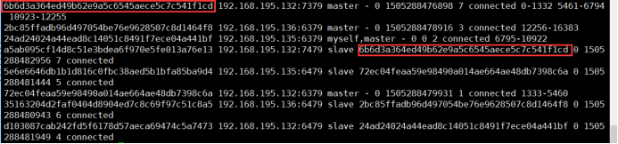
删除从节点
执行：
./redis-3.0.0/src/redis-trib.rb del-node 192.168.195.132:7479 a5ab095cf14d8c51e3bdea6f970e5fe013a76e13
删除主节点
执行：./redis-3.0.0/src/redis-trib.rb del-node 192.168.195.132:7379 6b6d3a364ed49b62e9a5c6545aece5c7c541f1cd
删除以占有hash槽的节点会失败，报错如下：
[ERR] Node 192.168.195.132:7379 is not empty! Reshard data away and try again.
需要将该节点占用的槽分配出去。
java操作redis
需要安装jedis客户端
<dependency>
<groupId>redis.clients</groupId>
<artifactId>jedis</artifactId>
<version>2.8.0</version>
</dependency>
jedis单机版
public class JedisTest { |
启动redis客户端查看
root@lwsh:/usr/local/redis/bin# ./redis-cli
127.0.0.1:6379> get single
"test"
jedis集群版
@Test |
启动客户端查看./redis-cli -c -h 192.168.195.132 -p 6379
192.168.195.132:6379> get cluster
-> Redirected to slot [14041] located at 192.168.195.136:6379
"cluster"
jedis整合spring
spring配置
<!-- 连接池配置 --> |
单机版整合
<bean id="jedisPool" class="redis.clients.jedis.JedisPool"> |
@Test |
集群版整合
<bean id="jedisCluster" class="redis.clients.jedis.JedisCluster"> |
@Test |
Zookeeper应用
zookeeper使用
Zookeeper简介
Zookeeper是高效的分布式协调服务，暴露了一些公用服务，如命名管理、配置管理、同步控制、群组服务等。可使用ZK实现如达成共识、集群管理、leader选举等。
Zookeeper是高可用的分布式管理与协调框架，基于ZAB算法（原子消息广播协议）实现。该框架能够保证分布式环境中数据一致性。
顺序一致性：从一个客户端发起的事务请求，最终按照发起的顺序被应用到Zookeeper。
原子性：所有事务请求的处理结果在整个集群中所有机器上的应用情况是一致的，即整个集群都成功应用了事务或者失败，不会出现部分集群中部分机器应用该事务。
单一视图：无论客户端连接的哪一个zookeeper服务器，其看到服务器端数据模型都是一致的。
可靠性：一旦服务器成功应用了事务，并完成对客户端的响应，那么该事务所引起的服务器端状态将会被一致保留下来。除非有另外一个事务对其更改。
实时性：一旦事务被成功应用，那么客户端就能立刻从服务器上获取变更后的新数据，zookeeper仅能保证在一段时间内，客户端最终一定能从服务器读取最新的数据状态。
zookeeper结构
zookeeper会维护一个树形的数据结构，类似于一个文件系统。
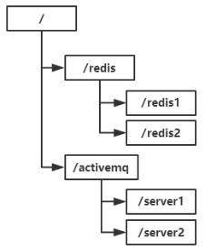
zookeeper数据模型Znode
zookeeper命名空间中Znode兼具文件和目录两种特点，每一个节点称为一个Znode，每个Znode由三部分组成：
stat：状态信息，描述Znode版本，权限等信息。
data：与Znode关联的数据。
children：Znode下的子节点。
节点类型
zookeeper节点分为临时节点和永久节点，节点类型在创建是确定不能被修改。
临时节点：该节点生命周期依赖于创建它们的会话。一旦会话（Session）结束或过期，临时节点将被自动删除，也可手动删除。临时Znode会绑定一个客户端，但对所有客户端可见，并且临时节点不允许拥有子节点。
永久节点：该节点 生命周期不依赖于会话，并且只有客户端显示执行删除操作时，才能被删除。
zookeeper组成
ZK server身份特性分为三种：Leader，Follower，Observer。
Leader：负责客户端的writer类型请求。
Follower：负责客户端的reader类型请求，参与leader选举。
Observer：特殊的“Follower”，可接收客户端reader请求，但不参与选举。（扩容系统支撑能力，提高读取速度。但不接收任何同步的写入请求，只负责与leader同步数据）
zookeeper安装
解压tar -zxvf zookeeper-x.x.x.tar.gz /user/local/zookeeper
修改linux环境变量
vim /etc/profile
export ZOOKEEPER_HOME=”/user/local/zookeeper”
export PAHT=”$ZOOKEEPER_HOME/bin:$PTAH”
source /etc/profile
配置zookeeper
cd /usr/local/zookeeper/conf
cp zoo_sample.cfg zoo.cfg
编辑配置文件vim zoo.cfg
dataDir=/usr/local/zookeeper/data
server.1=192.168.195.132:2881:3881
server.2=192.168.195.135:2881:3881
server.3=192.168.195.136:2881:3881
创建myid文件
mkdir /usr/local/zookeeper/data
cd /usr/local/zookeeper/data
touch myid
在服务器1中的myid文件写入1，服务器2写入2，服务器3写入3。
启动zookeeper
zkServer.sh start
查看节点状态
zkServer.sh status
客户端连接
zkClient.sh
查看根节点
ls /
zookeeper配置
zoo.cfg配置
tickTime：基本事件单元，单位毫秒。该事件是zookeeper服务器之间或客户端与服务器之间维持心跳的时间间隔。
dataDir：存储内容中数据库快照的位置，即zookeeper保存数据的目录，默认zookeeper将写数据的日志文件也保存在该目录。
clientPort：该端口是客户端连接zookeeper服务器的端口，zookeeper会监听该端口，接收客户端的访问请求。
initLimit：配置zookeeper接收客户端初始化连接时最长能忍受多少个心跳时间间隔数，当超过n个心跳时间（tickTime）长度后zookeeper服务器还没有收到客户端的返回信息，则客户端连接失败，总时长n*tickTime毫秒。
syncLimit：标识Leader与Follower之间发送消息，请求和应答时间长度，最长不能超过n个tickTime时间长度，总时长n*tickTime毫秒。
server.A=B:C:D
A表示该为第几号服务器。
B表示该服务器的ip地址。
C表示该服务器与集群中的Leader服务器交换信息的端口。
D表示集群中的Leader服务器宕机，需要该端口重新选举，选举新的Leader。
zookeeper客户端操作
连接客户端
./zkCli.sh
命令行操作：
查找：ls / ls /zookeeper
创建并赋值：create /lwsh data
获取：get /lwsh
设值：set /lwsh lwsh
删除指定节点：delete /lwsh/child
递归删除节点：rmr /lwsh
zookeeper应用场景
数据发布与订阅（配置中心）
发布与订阅模型，即配置中心。发布者将数据发布到ZK节点上，供订阅者动态获取数据，实现配置信息的集中式管理和动态更新。如全局的配置信息，服务式服务框架的服务地址列表等。
l 集中管理：应用启动时会主动获取一次配置，同时在节点注册一个Watcher，在以后每次配置更新时，都会实时通知订阅的客户端，从而获取最新配置信息。
l 分布式搜索服务：索引的元信息和服务器集群的节点状态存放在ZK的一些指定节点，供各个客户端订阅使用。
l 分布式日志收集系统：系统核心是收集在不同机器的日志。收集器通常按照应用来分配收集任务单元，因此需要在ZK上创建一个以应用名作为path的节点P，并将该应用所有机器ip，以子节点的形式注册到节点P上，在机器变动的时候，能够实时通知到收集器调整任务分配。
负载均衡
保证分布式环境的高可用，通常同一个应用或同一个服务的提供方都会部署多份，达到对等服务。而消费者需要在对等的服务器中选择一个用于执行相关业务。如消息中间件中的生产者、消费者负载均衡。
命名服务(Naming Service)
在分布式中使用命名服务，客户端应用能根据指定名字来获取资源或服务的地址、提供者等等信息。被命名的实体通常可以是集群中的机器、服务地址、远程对象等等----都可统称为名字（Name）。如分布式框架中的服务地址列表，通过调用ZK提供的创建节点的API，能够很容易创建一个全局唯一的path，该path可作为一个名称。
l Dubbo使用zookeeper作为命名服务，维护全局服务地址列表。
服务提供者：向ZK指定节点/dubbo/${serviceName}/providers目录写入自己的URL地址，该操作就完成了服务的发布。
服务消费者：订阅/dubbo/${serviceName}/providers目录下的提供者URL地址，并向/dubbo/${serviceName}/consumers目录写入自己的URL地址。
所有向ZK上注册的地址都是临时节点，能够保证服务提供者和消费者能够自动感应资源的变化。Dubbo针对服务粒度的监控，方法是订阅/dubbo/${serviceName}目录下所有提供者和消费者信息。
分布式通知/协调
zookeeper中watcher注册与异步通知机制，可实现分布式环境下不同系统之间的通知与协调，实现对数据变更的实时处理。使用方法是不同系统都对ZK上同一个znode进行注册，监听znode的变化（包括znode的内容以及子节点），其中一个系统更新了znode，另外的系统能够收到通知并作出相应处理。
l 心跳检测机制：检测系统和被检测系统之间不直接关联，通过ZK某个节点关联，减少系统耦合。
l 系统调用模式：系统有控制台和推送系统两部分组成，控制台职责控制推送系统进行相应的推送工作。操作控制台实际是修改ZK某些节点的状态，ZK就把变化通知给注册watcher的客户端，即推送系统，作出相应的推送任务。
l 工作汇报模式：子任务启动，在ZK注册一个临时节点，并且定时将自己的进度进行汇报（将进度写回临时节点），任务管理者就能实时知道任务进度。
集群管理与Master选举
l 集群机器监控
用于对机器中机器状态、在线率有较高要求的场景，能够快速对集群中变化作出响应。检测集群机器是否存活过去做法：监控系统通过某种操作（如ping）定时检测每个机器，或者机器自己定时向监控系统汇报“survival”，但该做法存在缺点：
① 集群中机器变动，牵连修改的东西较多。
② 有一定延时。
利用zookeeper特性，可实现另外的集群机器存活监控系统：
a. 客户端在节点x注册一个watcher，如果x节点变化就会通知客户端。
b. 创建EPHEMERAL（临时）类型节点，一旦客户端和服务端的会话接收或过期，该节点就回消失。
如监控系统在/clusterServers节点上注册一个watcher，每次动态增加机器，就往/clusterServers下创建一个EPHEMERAL类型节点：/clusterServers/{hostname}。监控系统就能实时知道机器的增减情况。
l zookeeper经典场景：master选举
在分布式环境中相同的业务应用分布在不同的机器上，有些业务逻辑（如耗时计算、网路I/O处理），往往只需集群中一台机器进行执行处理，其余机器可共享结果，可减少大量重复操作提高性能，于是master选举便是该场景下碰到的主要问题。
利用zookeeper的强一致性，能够保证在分布式高并发情况下节点创建的全局唯一性，即同时有多个客户端请求创建/currentMaster节点，最终一定只有一个客户端请求能够创建成功，利用该特性可在分布式环境进行集群选举。
动态master选举，需要用到EPHEMERAL_SEQUENTIAL类型节点的特性。在方式下，允许所有请求都能够创建成功，但是有创建的顺序，于是所有请求最终在ZK上创建结果如下：
/currentMaster/{session}-1,/currentMaster/{session}-2,/currentMaster/{sesson}-3...每次选取序列最小的机器作为master，如果机器宕机则该节点立即消失，那么最小的机器就是master。
l 在搜索系统中，如果集群中每个机器都生成一份全量索引，不仅耗时而且不能保证彼此之间索引数据一致。因此让集群中的master进行全量索引的生成，然后同步到集群中其他机器。master选举容灾措施，可以随时手动指定master，即应用在ZK无法获取master信息时，可以通过如http方式获取master。
分布式锁
分布式锁得益于zookeeper的数据强一致性。锁服务可分为两类，一个是保持独占，一个是控制时序。
l 保持独占：所有试图获取该锁的客户端，最终只有一个可以成功获得这把锁。通常做法将ZK的一个znode看作一把锁，通过create znode方式创建。所有客户端都去创建/distribute_lock节点，最终成功创建的客户端拥有这把锁。
l 控制时序：所有试图来获取该锁的客户端，最终都会被安排执行，但有一个全局时序。与保持独占类似，只是/distribute_lock节点已预先存在，客户端在该节点下创建有序节点，ZK的父节点(/distribute_lock)维护一份sequence，保证子节点创建的时序性，从而控制每个客户端的全局时序。
分布式队列
l 常规的FIFO队列：与分布式锁服务的控制时序场景基本原理一致。
l 增强的FIFO队列：在/queue节点下预先建立/queue/num节点，并赋值为n，表示队列大小，之后每次有队列成员加入，就判断是否达到队列大小，决定是否可以开始执行。典型场景：分布式环境中，一个大人物TaskA需要在很多子任务完成情况下才能进行。这时一个子任务完成就去/taskList下建立自己的临时时序节点，当/taskList发现子节点满足指定个数n，就进行下一步处理。
Java消息服务
JMS
JMS
JMS全称：Java Message Service，Java消息服务。JMS定义了Java中访问消息中间件 的接口，但没有实现，实现JMS接口的消息中间件成为JMS Provider例如ActiveMQ等。
Java消息服务指两个应用程序之间进行异步通信，当使用JMS进行通信时，应用之间不是直接相连，而是通过共同的消息收发服务连接起来。
JMS使用场景如例如基于事件的聊天服务，发送消息时，接收者不需要在线，等客户端上线后，能接收到服务器发送的消息。
JMS规范
JMS message
JMS消息由三部分组成：消息头、消息属性、消息体。
消息头包含消息的识别消息和路由消息：
1、JMS Destination：消息发送的目的地，主要指Queue和Topic，由Send()设置。
2、JMS DeliveryMode：传送模式。持久模式和非持久模式。一条持久性消息在JMS提供者出现故障后不会丢失，知道服务器恢复后再次传递。非持久性消息只会传递一次，服务器出现故障则会丢失。由send()方法设置。
3、JMS Expiration：消息过期时间，零表示该消息永不过期。
4、JMS Priority：消息优先级，0-4时普通消息，5-9是加急消息。加急消息先于普通消息到达，默认是4级。
5、JMS MessageID：唯一识别每个消息的标识，由JMS Provider产生。
6、JMS Timestamp：Provider在调用Send()方法时自动设置，是消息被发送和消费者实际接收的时间差。
7、JMS CorrelationID：连接到另外一个消息，典型应用在回复消息中连接到原消息。CorrelationID用于将一条消息标记为对JMSMessageID标示的上一条消息的应答，由客户端设置。
8、JMS Type：消息类型标识符，由客户端设置。
9、JMS ReplyTo：提供本消息回复消息的目的地址，由客户端设置。
10、JMS Redelivered：如果一个客户端收到一个设置了JMSRedelivered属性的消息，则表示可能客户端曾经在早些时候收到过该消息，但并没有签收(acknowledged)。如果该消息被重新传送，JMSRedelivered=true 否则 JMSRedelivered=flase 。由JMS Provider设置。
消息体：
1、TextMessage文本对象。
2、ObjectMessage Java对象。
3、BytesMessage 字节数据。
4、StreamMessage Java原始值数据流。
5、MapMessage 键值对。
消息属性：
1、应用程序设置和添加的数据，如message.setStringProperty(“name”,name);
2、JMS定义的数据，使用“JMSX”作为属性名前缀，connection.getMetaData().getJMSXPropertyNames() 方法返回所有连接支持的JMSX属性的名字。
3、JMS提供商特定的属性。
JMS Provider
消息生产者，创建和发送JMS消息的客户端应用。
JMS Consumer
消息消费者，创建和处理JMS消息的客户端应用。
JMS domains：消息传递模型
点对点消息传递模型（point-to-point,PTP）。
发布/订阅消息传递模型（Publish/subscribe，pub/sub）。
Connection factory：连接工厂，创建连接对象，用来连接到JMS的provider
JMS Connection：封装了客户与JMS提供者之间的虚拟的连接。
JMS Session：生产和消费的一个单线程上下文会话，用于创建消息生产者（producer）、消息消费者（consumer）和消息（message）等。会话提供了一个事务性的上下文，在该上下文中，一组发送和接收被组合到了一个原子操作中。
Destination：消息发送到的目的地。
Acknowledge：签收。
Transaction：事务。
JMS client：用来收发消息的Java应用。
JMS消息传送模型
P2P（点对点消息模型）
1、每个消息只能有一个消费者。
2、消息的生产者和消费者之间没有时间上的依赖。消费者不管生产者是否在运行，都可以提取消息。生产者不管消费者是否在运行，都可以生产数据。
3、消费者成功接收消息后，会发送确认收到通知。
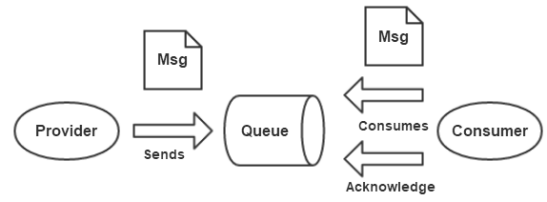
Pub/Sub（发布/订阅消息模型）
1、每个消息可以有多个消费者。
2、生产者和消费者之间有时间上的依赖，针对某个主题（topic）的订阅者，必须创建一个订阅者之后，才能消费发布者的消息，而且消费消息，订阅者必须保持运行状态。
3、为了缓和时间上的依赖，JMS允许订阅者创建一个可持久化的订阅。即时订阅者没有运行，也能接收到发布者的消息。
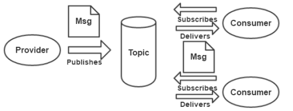
在点对点消息传递域中，目的地被称为队列（queue）；在发布/订阅消息传递域中，目的地称为主题（topic）。
JMS 消息接收
JMS中，消息接收有两种方式：
同步
使用同步方式接收消息，消息订阅者调用receive()方法。在receive()中，消息未到到或在达到指定时间之前，方法会阻塞，直到消息可用。
异步
使用异步接收消息，消息订阅者需注册一个消息监听者，类似于时间监听器，只要消息到达，JMS服务提供者会通过调用监听器的onMessage()传递消息。
JMS编程模型
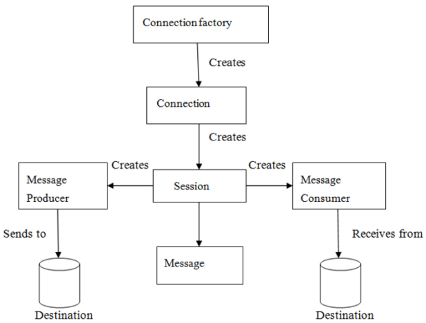
ConnectionFactory
创建Connection对象的工厂，针对不同的jms消息模型，分别有QueueConnectionFactory和TopicConnectionFactory。
Destination
Destination是消息生产者的消息发送目标或者说消息消费者的消息来源。消息可以分为 队列（Queue）和主题（Topic）。
Connection
Connection表示客户端和JMS系统之间建立的连接（对TCP/IP socket的包装）。Connection可以产生多个Session，有QueueConnection和TopicConnection。
Session
Session是操作消息的接口。可以通过Session创建生产者、消费者、消息等。Session提供了事务功能。在session发送/接收多个消息时，可以将该动作放在一个事务中。有QueueSession和TopicSession。
消息生产者
消息生产者由Session创建，并用于将消息发送到Destination。由QueueSender和TopicPublisher。
消息消费者
消息消费者由Session创建，用于接收被发送到Destination的消息。有QueueReceiver和TopicSubscriber，分别通过Session的createReceiver（Queue）或createSubscriber（topic）创建。
MessageListener
消息监听器。注册监听器，当消息到达，将自动调用监听器的onMessage方法。
ActiveMQ消息中间件
ActiveMQ
使用ActiveMQ两种方式
方式一：单独的ActiveMQ服务器
将ActiveMQ解压，windows执行bin目录中的activemq.bat，linux执行bin目录中的./activemq start。
方式二：整合在web应用中
导入activemq-all-x.x.x.jar到web应用的lib目录，写方法启动activemq。
ActiveMQ配置
修改jetty.xml文件，添加角色
<property name="roles" value="user,admin,lwsh" />
修改jetty-realm.properties 文件，更改ActiveMQ登录账户和密码
#admin: admin, admin
#user: user, user
lwsh: lwsh, lwsh
修改activemq.xml文件，使用mysql进行持久化，导入commons-dbcp2.x.jar（必须为2.x版本）以及mysql-x.x.jar到ActiveMQ的lib目录下。
<persistenceAdapter>
<!--<kahaDB directory="${activemq.data}/kahadb"/>-->
<jdbcPersistenceAdapter dataSource="#derby-ds"/>
</persistenceAdapter>
在<broker>节点后添加数据源
<bean id="derby-ds" class="org.apache.commons.dbcp2.BasicDataSource" destroy-method="close">
<property name="driverClassName" value="com.mysql.jdbc.Driv er" />
<property name="url" value="jdbc:mysql://127.0.0.1: 3306/activemq?relaxAutoCommit=true" />
<property name="username" value="root" />
<property name="password" value="lwsh" />
<property name="poolPreparedStatements" value="true" />
</bean>
远程连接mysql
修改mysqld.cnf配置文件，开放局域网访问
注释bind-address = 127.0.0.1或者修改为bind-address = 0.0.0.0
开放远程连接
方式一：
mysql -uroot -plwsh
mysql>use mysql;
mysql>update user set host='%' where user='root';
mysql>select host,user from user;
方式二：
mysql>GRANT ALL PRIVILEGES ON *.* TO 'root'@'%' IDENTIFIED BY 'lwsh' WITH GRANT OPTION;
重启mysql生效
/etc/init.d/mysql restart
ActiveMQ启动
Linux启动./activemq start，默认使用8161端口提供管理控制台服务，使用61616端口提供JMS消息服务。
查看61616端口是否打开：netstat -an|grep 61616
访问activemq控制台http://192.168.195.132/admin/
ActiveMQ编程步骤
第一步：建立ConnectionFactory工厂对象，填入用户名、密码、以及连接地址，默认地址端口为”tcp://localhost:61616”。
第二步：通过ConnectionFactory工厂对象创建Connection连接，并且调用Connection的start方法开启连接，Connection默认关闭。
第三步：通过Connection对象创建Session会话（上下文环境对象），用于接收消息 ，第一个参数为是否开启事务，第二个参数为签收模式，一般设置为自动签收。
第四步：通过Session创建Destination对象，客户端用来指定生产消息目标和消费消息来源的对象。在PTP模式中Destination被称为Queue即队列，在Pub/Sub模式被称为Topic即主题。
第五步：通过Session对象创建消息的发送和接收对象（生产者和消费者）。
第六步：是用MessageProducer的setDeliveryMode方法为其设置持久化特性和非持久化特性（DeliveryMode）。
第七步：使用TextMessage创建数据，并用MessageProducer的send方法发送数据。MessageConsumer使用receive方法进行接收数据，最后关闭Connection连接。
ActiveMQ PTP模式
生产者
public class provider { |
消费者
public class consumer { |
ActiveMQ Pub/Sub模式
生产者
public class provider { |
消费者
public class consumer { |
ZooKeeper+ActiveMQ高可用
ActiveMQ主从复制
ActiveMQ主从复制模式高可用，使用zookeeper（集群）注册所有ActiveMQ Broker。只有一个Borker对外提供服务（即master节点），其他Broker处于待机状态（即slave）。如果master故障不能对外提供服务，zookeeper则内部选举从slave节点选举一个Broker充当master。
zookeeper集群
主机IP | 消息端口 | 通信端口 | 节点目录/usr/local/ |
192.168.195.132 | 2181 | 2888:3888 | zookeeper |
192.168.195.135 | 2181 | 2888:3888 | zookeeper |
192.168.195.136 | 2181 | 2888:3888 | zookeeper |
ActiveMQ主从
主机IP | 主机名 | 主从通信端口 | 消息端口 | 控制台端口 | 节点目录/usr/local/ |
192.168.195.132 | node1 | 62132 | 61616 | 8161 | activemq |
192.168.195.135 | node2 | 62132 | 61616 | 8161 | activemq |
192.168.195.136 | node3 | 62132 | 61616 | 8161 | activemq |
修改ActiveMQ节点activemq.xml配置文件
第一处修改：brokerName=”activemq-cluster”（三个节点修改相同）
第二处修改：
<persistenceAdapter>
<!--<kahaDB directory="${activemq.data}/kahadb"/>-->
<replicatedLevelDB
directory="${activemq.data}/leveldb"
replicas="3" <!--节点数为3-->
bind="tcp://0.0.0.0:62132" <!--主从通信端口-->
zkAddress="192.168.195.132:2181,192.168.195.135:2181,192.168.195.136:2181" <!--zookeeper集群连接地址-->
hostname="node1" <!--此处为主机名，另外两个节点分别为node2、node3-->
zkPath="/activemq/leveldb-stores"
/>
</persistenceAdapter>
测试ActiveMQ
启动zookeeper集群：zkServer.sh start
启动activemq节点：/usr/local/activemq/bin/linux-x86-64/active start
进入zookeeper集群：zkCli.sh
查看activemq节点：ls /activemq
使用ZooInspector工具连接zookeeper集群，输入集群地址
activemq主从有三个文件，文件中elected字段不为空则为master，为null则为slave。activemq只能访问master节点的控制台，slave节点的控制台不能访问。此时master为node1。
停止master node1服务，此时zookeeper集群会投票选举新的master，新master地址为node3。
重新启动node1服务，此时zookeeper集群不会重新选举，master依旧为node3。

连接ActiveMQ
java代码中连接方式修改：
ActiveMQConnectionFactory connectionFactory = new ActiveMQConnectionFactory( |
ActiveMQ网络集群模式
针对海量消息进行横向扩展性和系统的高可用性，ActiveMQ提供了网络连接模式的集群模式。通过将多个Broker实例连接在一起，作为一个整体对外服务，提高整体对外的消息服务能力。通过该方式连接在一起的broker实例之间，可以共享队列和消费者列表，从而实现分布式。
拓扑结构
ActiveMQ部署拓扑结构（嵌入、主从复制、网路连接）：
在node1服务器上启用不同的3个端口作为一个主从模式，同样在node2上启用不同3个端口作为一个主从。两个主从作为一个ActiveMQ集群。
zookeeper集群
主机IP | 消息端口 | 通信端口 | 节点目录/usr/local/ |
192.168.195.132 | 2181 | 2888:3888 | zookeeper |
192.168.195.135 | 2181 | 2888:3888 | zookeeper |
192.168.195.136 | 2181 | 2888:3888 | zookeeper |
ActiveMQ集群1
主机IP | 主机名 | 集群通信端口 | 消息端口 | 控制台端口 | 节点目录/usr/local/ |
192.168.195.132 | node1 | 62131 | 61616 | 8161 | activemq |
192.168.195.132 | node1 | 62132 | 61617 | 8162 | activemq |
192.168.195.132 | node1 | 62133 | 61618 | 8163 | activemq |
ActiveMQ集群2
主机IP | 主机名 | 集群通信端口 | 消息端口 | 控制台端口 | 节点目录/usr/local/ |
192.168.195.135 | node2 | 62131 | 61616 | 8161 | activemq |
192.168.195.135 | node2 | 62132 | 61617 | 8162 | activemq |
192.168.195.135 | node2 | 62133 | 61618 | 8163 | activemq |
修改ActiveMQ集群节点activemq.xml配置文件
第一处修改：brokerName=”activemq-cluster1”（集群1三个节点相同，集群2三个节点为activemq-cluster）
第二处修改： <transportConnector name="openwire" uri="tcp://0.0.0.0:61616?maximumConnections=1000&wireFormat.maxFrameSize=104857600"/>（集群1和集群2其他两个节点分别为61617、61618）
第三处修改：
<persistenceAdapter>
<!--<kahaDB directory="${activemq.data}/kahadb"/>-->
<replicatedLevelDB
directory="${activemq.data}/leveldb"
replicas="3" <!--节点数为3-->
bind="tcp://0.0.0.0:62131" <!--主从通信端口，集群1和集群2其他节点分别为62132、62133-->
zkAddress="192.168.195.132:2181,192.168.195.135:2181,192.168.195.136:2181" <!--zookeeper集群连接地址-->
hostname="node1" <!--此处为主机名，集群1三个节点都为node1，集群2三个节点都为node2-->
zkPath="/activemq/leveldb-stores"
/>
</persistenceAdapter>
第四处修改：
集群1连接集群2，在集群1的配置文件broker节点内添加networkConnector静态URI，可以指定多个URL，networkConnector将连接到每一个broker。
<networkConnectors>
<networkConnector
uri="static:(tcp://192.168.195.132:61616,tcp://192.168.195.132:61617,tcp://192.168.195132:61618)" duplex="false"/>
</networkConnectors>
集群2连接集群1，在集群2的配置文件broker节点内添加。
<networkConnectors>
<networkConnector
uri="static:(tcp://192.168.195.135:61616,tcp://192.168.195.135:61617,tcp://192.168.195135:61618)" duplex="false"/>
</networkConnectors>
启动ActiveMQ集群
./activemq/bin/linux-x86-64/activemq start
......
查看zookeeper，activemq有两个master节点